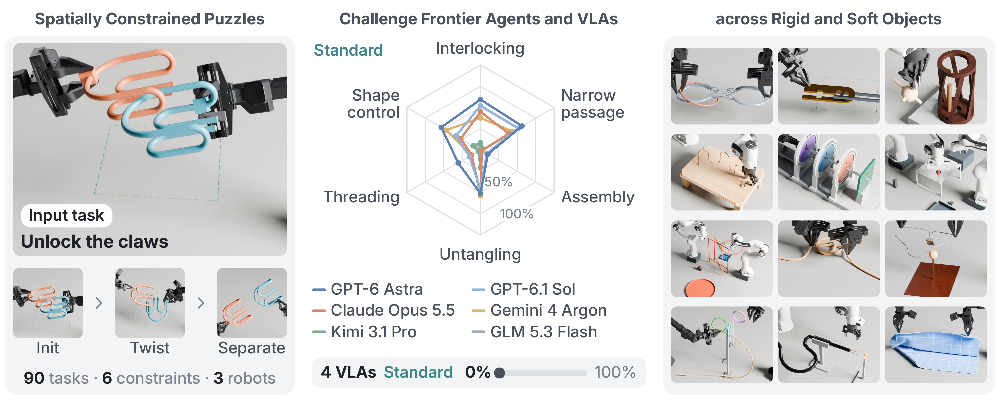

RoboARC: Physical Puzzles for Robotic Manipulation under Spatial Constraints
1Northwestern University 2Microsoft 3UC Berkeley 4Carnegie Mellon University * Equal contribution; † Core contributor.
When manipulation hinges on spatial constraints, can robots reason out the right motions?
